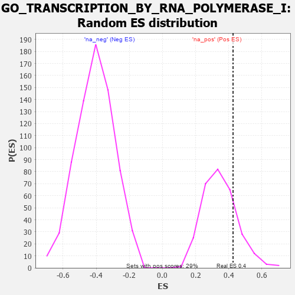

| | | Dataset | 7d |
| Phenotype | NoPhenotypeAvailable |
| Upregulated in class | na_pos |
| GeneSet | GO_TRANSCRIPTION_BY_RNA_POLYMERASE_I |
| Enrichment Score (ES) | 0.42571548 |
| Normalized Enrichment Score (NES) | 1.2188962 |
| Nominal p-value | 0.21875 |
| FDR q-value | 0.47242787 |
| FWER p-Value | 1.0 |
Table: GSEA Results Summary
 Fig 1: Enrichment plot: GO_TRANSCRIPTION_BY_RNA_POLYMERASE_I
Fig 1: Enrichment plot: GO_TRANSCRIPTION_BY_RNA_POLYMERASE_I
Profile of the Running ES Score & Positions of GeneSet Members on the Rank Ordered List
| PROBE | GENE SYMBOL | GENE_TITLE | RANK IN GENE LIST | RANK METRIC SCORE | RUNNING ES | CORE ENRICHMENT | | 1 | CCNH | | | 301 | 0.817 | 0.0716 | Yes |
| 2 | RRN3 | | | 438 | 0.667 | 0.1439 | Yes |
| 3 | DHX33 | | | 605 | 0.593 | 0.2025 | Yes |
| 4 | CDK7 | | | 686 | 0.564 | 0.2679 | Yes |
| 5 | WDR75 | | | 874 | 0.513 | 0.3131 | Yes |
| 6 | UTP15 | | | 1135 | 0.457 | 0.3416 | Yes |
| 7 | ERCC3 | | | 1173 | 0.451 | 0.3973 | Yes |
| 8 | MAF1 | | | 1667 | 0.361 | 0.3838 | Yes |
| 9 | ERCC2 | | | 1712 | 0.354 | 0.4257 | Yes |
| 10 | BAZ2A | | | 2227 | 0.272 | 0.3975 | No |
| 11 | TAF1B | | | 2404 | 0.245 | 0.4082 | No |
| 12 | TBP | | | 3493 | 0.078 | 0.2820 | No |
| 13 | MAPK3 | | | 3589 | 0.062 | 0.2783 | No |
| 14 | MTOR | | | 4114 | -0.025 | 0.2157 | No |
| 15 | IPPK | | | 4306 | -0.060 | 0.1998 | No |
| 16 | ERCC6 | | | 4464 | -0.087 | 0.1917 | No |
| 17 | DDX11 | | | 5102 | -0.225 | 0.1417 | No |
| 18 | TAF1 | | | 7643 | -1.633 | 0.0412 | No |
Table: GSEA details [plain text format]

Fig 2: GO_TRANSCRIPTION_BY_RNA_POLYMERASE_I: Random ES distribution
Gene set null distribution of ES for GO_TRANSCRIPTION_BY_RNA_POLYMERASE_I